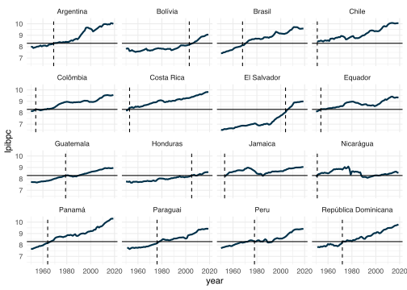
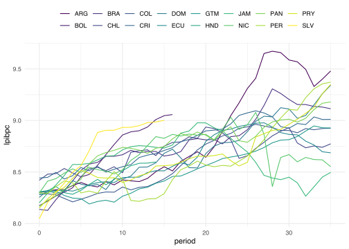
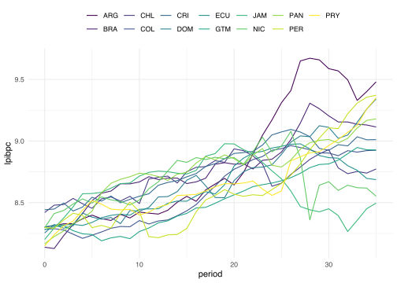
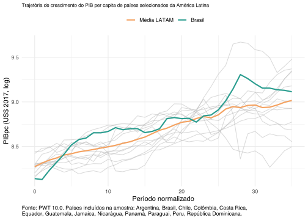

# A tibble: 36 × 4
isocode base_year pais cont
<fct> <int> <chr> <chr>
1 CHL 1951 Chile Americas
2 NIC 1951 Nicarágua Americas
3 JAM 1953 Jamaica Americas
4 COL 1954 Colômbia Americas
5 ECU 1954 Equador Americas
6 BRB 1960 Barbados Americas
7 PAN 1964 Panamá Americas
8 BRA 1968 Brasil Americas
9 ARG 1969 Argentina Americas
10 ABW 1970 Aruba Americas
11 AIA 1970 Anguila Americas
12 ATG 1970 Antígua e Barbuda Americas
13 BLZ 1970 Belize Americas
14 CYM 1970 Ilhas Cayman Americas
15 DMA 1970 Dominica Americas
16 GUY 1970 Guiana Americas
17 KNA 1970 São Cristóvão e Névis Americas
18 LCA 1970 Santa Lúcia Americas
19 MSR 1970 Montserrat Americas
20 SUR 1970 Suriname Americas
# ℹ 16 more rowsIntrodução
Falar de crescimento econômico não é nada fácil.
As pessoas mantêm uma visão estática sobre o grupos dos páises “ricos” e dos países “pobres”, a despeito das enormes mudanças de renda que observamos nos últimos 40-60 anos. As pessoas tendem a acreditar que países centrais como Reino Unido, França, Estados Unidos e Alemanha continuam sendo os mais ricos1, abrindo algumas raras exceções, por exemplo, para os países produtores de petróleo do Oriente Médio, que tem valores inflacionados de PIB per capita.
Que as pessoas são ignorantes sobre o mundo não é novidade. O historiador Hans Rolsing criou sua carreira mostrando o quão pouco as pessoas sabem sobre o mundo. Ainda assim não custa notar:
Taiwan e Coreia do Sul já ultrapassaram Japão, França e Reino Unido. A Cingapura ultrapassou o PIB per capita dos EUA já na metade dos anos 2000.
Estônia já é mais rica do que Grécia, Portugal e Rússia. Letônia, que no começo dos anos 90 tinha PIB per capita de ~US$2500, atualmente está próxima de ~US$30.000, ultrapassando Grécia, Chile e Turquia.
Apesar de aparentemente estar num estado perpétuo de crise econômica, a Argentina continua tendo um dos maiores PIB per capita da América do Sul e continua (bastante) à frente do Brasil.
China e Índia continuam com PIB per capita similar ao de países latinoamericanos e estão (por enquanto) atrás do Brasil e do México.
Dados
Um jeito simples de conseguir dados sobre crescimento econômico é via o pacote {pwt10}. Este pacote contém a tabela mais atualizada da Penn World Table, uma base de dados, que harmoniza uma série de variáveis macroeconômicas em mais de 170 países.
Para facilitar a vida, recomendo muito o pacote {countrycode}, que descobri recentemente. O pacote permite que você traduza o nome de países e troque entre códigos (iso2c, iso3c) e nomes completos.
O Banco Mundial agrupa os países em 4 faixas de renda: países de renda baixa, renda média-baixa, renda média-alta e renda alta2. As linhas divisórias que separam cada um dos grupos variam de ano a ano, mas grosso modo, o valor do PIB per capita que separa um país de renda média-baixa para um país de renda média-alta é em torno de US$4000.
Neste post quero ver como é a trajetória de crescimento dos países logo após este ponto: como que crescem os países recém inclusos ao time de renda média-alta.
Para encontrar o ano no qual cada país superou a marca dos US$4000 eu calculo a distância absoluta entre o PIBpc de cada ano e este valor. Como o crescimento de um país pode oscilar, é possível que algum país ultrapasse esta marca, entre em recessão e depois ultrapasse esta marca novamente.
No código abaixo eu encontro os cinco “momentos” em que o PIBpc esteve o mais próximo de US$4000 e seleciono o que aconteceu o mais no passado possível.
Em qual ano cada país da América Latina ultrapassou a marca dos US$4000? Entre os países que já não estavam acima desta marca, os primeiros a chegar lá foram Chile e Nicarágua, em 1951.
Como a base do PWT começa em 1950, muitos dos países desenvolvidos já tinham um PIB per capita acima de US$4000 nesta época.
Você deve ter reparado que há vários países com nomes curiosos na lista acima: a maioria destes países são ilhas da América Central e eu não estou muito interessado nelas. Assim eu removo todos os países com 1 milhão de habitantes ou menos e também removo alguns
Antes de qualquer coisa, vale a pena verificar se a variável base_year, de fato, está identificando o ano em que o país ultrapassou a marca dos US$4000. Pelo gráfico abaixo, parece que está tudo certo. Note que aquele pequeno ajuste no código citado acima fez diferença no caso do Peru, cujo PIB per capita fica oscilando em torno de US$4000 durante os anos 1980 e 1990.

E então como que foi o padrão de crescimento? Pelo gráfico abaixo parece inicialmente, que a maior parte dos países seguiu um padrão de crescimento semelhante. Há algumas exceções como a Argentina que tem um crescimento forte a partir do ano 20 (xxxx)
Bolívia e El Salvador são os dois países que entraram apenas recentemente no clube da renda média-alta; coincidentemente, ambos os países estão tendo uma trajetória melhor do que os demais países tiveram no passado.


